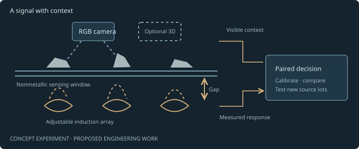
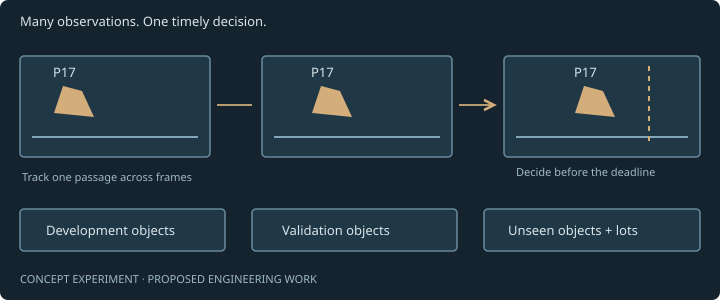
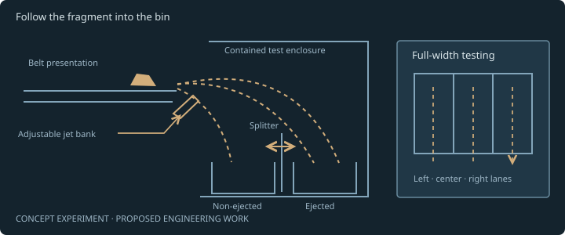
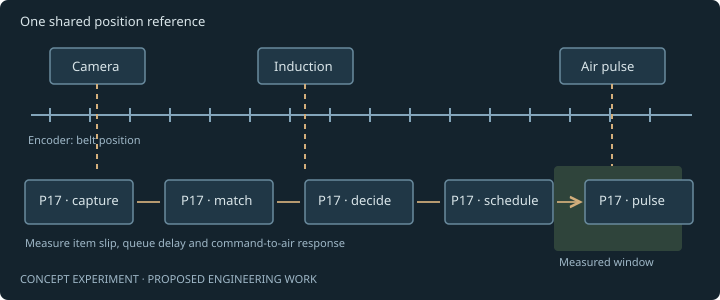
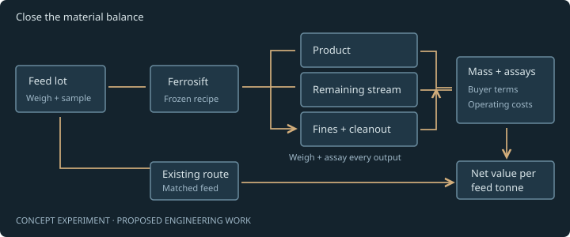

Computer vision outputs
Saved predictions and verified labels support the stated annotation metrics. Clip-level scores, development exposure and model identities are available for inspection.
Device envelopes do not reproduce manufacturer internals.
Illustrative group/window routing
Illustrative review assignments: 0 markers · 0 candidate neighbours
Markers: blue target candidate · gray balance · amber entire review group, including candidate neighbours.
Capture hold: No operating speed or full-width no-jet capture route is approved. The route paths are schematic; the 1.5 m/s outer-lane point-path check overflies the receiving wall.
Calculated travel only. Independent of recorded video playback; no demonstrated latency or throughput.
Colored markers and routing windows are explanatory, not PCB inference, tested trajectories or control timings.
Research overlay · schematic · not CAD
One proposed lane, with an under-belt head and opposed side heads. Browser-only shapes illustrate an experiment; downloaded CAD is unchanged.
Research overlay off. Authoritative CAD assembly shown.
Open the close-up explanation →Drag to orbit · Ctrl+scroll or + / − to zoom
Design study / Revision 01
A modular recovery concept for screened electronic scrap.
A main research direction
Under-belt and side-facing measurements. We’ll test whether complementary responses help classify layered e-scrap.
CAD conceptHardware unvalidated
01 / Computer vision
Give the camera a repeatable view.
The optical bay reserves controlled lighting, RGB and an optional depth mount. A new PCB dataset and validated coverage are still needed; the 400 mm optical footprint is an example within a 600 mm belt.
RGB captures visible shape and surface information for classification. The model comparisons below measure steel/copper recognition; the PCB program will build its own labeled material trials.
Watch the steel / copper replay →02 / Inductive sensing
Measure response beneath the belt.
A replaceable induction cassette sits beneath the planned nonconductive window. The study will measure how much its signal adds to RGB, including the effects of gap, coverage and interference. Material assays remain part of physical validation.
Illustrative signal trace, not a sensor measurement. Size, shape, gap and material all shape the reading. [02]
03 / Sensor fusion + control
Know which piece arrives, and when.
The proposed controller joins image and induction observations in encoder coordinates. The final sensing datum is 1250 mm before the lip: 1.25 seconds of travel at the 1 m/s study reference.
Measure total sensing-to-air latency against belt position. The proposed control policy suppresses target ejection for invalid or overlapping groups and routes broad review windows conservatively.
04 / Physical sorting
Proposed separation · moving capture unresolved.
Moving-particle capture — design hold. At a hypothetical 1.5 m/s, a gravity-only point at y=275 mm passes about 70 mm above the converging wall. The surrounding side guards do not collect this interior path. Width checks do not establish capture; displayed speeds and paths are schematic, with no operating speed approved.
An airjet stage proposes PCB-rich target versus balance. A second gate on the balance chute diverts groups or broad windows to review, after feed inhibit, a verified clear gap and gate-position feedback.
The balance gate cannot recover material already ejected into target. Three bins do not imply three-way per-object sorting or a certified safety function.
05 / Verification + improvement
Measure the complete path to collection.
Weigh input and every output; separate recognition, tracking and actuator errors. Begin with sparse, qualified 12.5–25 mm and 25–50 mm campaigns. The 50–200 kg/h ramp is a proposed trial, not rated capacity.
01 / Ferrosift vision
Explore Ferrosift’s custom-trained vision model alongside a YOLO11s reference. Play collected conveyor footage, compare saved detections on identical frames and inspect measured scores where labels are verified.
Ferrosift copper annotation recall
vs 85.6% for the YOLO11s reference
On our labeled conveyor evaluation, Ferrosift detected 94.0% of copper annotations versus 85.6% for the YOLO11s reference, an 8.4 percentage-point improvement.
7,081 / 7,535 versus 6,448 / 7,535 copper annotations across 1,522 development frames. This earlier aggregate is separate from the selected-video scores below; repeated appearances count as annotations.
Inspect the earlier evaluation, replay and steel-alarm counts ↗Collected footage and saved predictions are distinct. This catalog is not a set of independent holdouts; each recording includes its exposure history, source and license. Both models use the same sampled frames.
Evidence boundary
A rendered machine, a recorded model result and a financial scenario answer different questions. This review keeps their claims separate.
Saved predictions and verified labels support the stated annotation metrics. Clip-level scores, development exposure and model identities are available for inspection.
Named solids, interfaces and service provisions make the preliminary design reviewable. Fabrication, measured operating capacity and machinery-safety review are the next validation steps.
Recovery, purity, continuous throughput, operating cost and customer value require material trials, buyer requirements and measured system performance.
Research concept / multi-direction sensing
Ferrosift is developing a conveyor that combines AI vision with electromagnetic measurements from multiple directions to identify difficult, layered e-scrap more accurately and recover more valuable material. This is the development goal of the proposed experiment below.
Adjustable stations, head directions and excitation frequencies are experimental options for the engineering teams to test. The research overlay is separate from the preliminary engineered CAD and its open validation holds.
02 / Engineering program
Five proposed engineering teams will develop one measurable sorting system for screened, depolluted 12.5–50 mm PCB and e-scrap. The preliminary design combines RGB imaging, induction, belt-referenced tracking and air-jet separation; optional 3D will earn its place through testing. Each program has a specific question to answer and a gate before the next stage.
Make every metal signal more useful

An e-scrap fragment can combine metal, coatings, resin and attached components. Commercial induction sorters already recover circuit-board and cable fractions. The research opportunity is to interpret a difficult fragment more reliably: electromagnetic response changes with material, thickness, shape, orientation and distance from the sensor. A stronger signal does not automatically mean more copper. STEINERT KSS CLI: commercial color, 3D and induction sorting · Micro-Epsilon: eddy-current sensor engineering catalog
Our proposed induction team will develop and characterize an adjustable under-belt sensing array, mounted beneath a nonmetallic sensing window. The work will evaluate excitation frequencies, signal features, channel interference and calibration against physically identified fragments. Paired RGB observations will provide visible shape and surface context; optional 3D will be tested for useful height and overlap information.
The proposed solution is a calibrated sensing module whose signals add information to the sorting decision across the intended feed range. Controlled tests will vary pose, sensor gap, belt background and contamination, then move to previously unseen source lots.
Advance when RGB plus induction improves held-out target-piece recall at a predeclared false-removal limit and operating rate, with the gain surviving pose and gap changes.
Fewer missed target fragments at comparable false-removal rates; quantify incremental benefit against RGB-only and induction-only baselines.
Recognize the piece. Earn the decision.

Rust, glare, dust and partial visibility can make scrap recognition difficult. Repeated video frames can also make an evaluation look larger than its population of physical pieces. Our computer-vision program will connect recognition to the decision that matters: identifying the right piece before it reaches the ejector. SteelDS provides a useful conveyor-development setting for this work. SteelDS: primary conveyor-video dataset paper
The proposed team will refine Ferrosift’s custom-trained vision model, improve imaging and temporal decisions, and build tests separated by physical object, source lot and recording session. Each comparison will use frozen thresholds, the same inputs and a shared evaluation policy. Lighting, overlap, orientation and motion blur will be explicit conveyor stress tests. Ultralytics YOLO26: model documentation
Historical development evidence is encouraging: copper-annotation recall was 94.0% versus 85.6% for the YOLO11s reference, an 8.4-percentage-point difference, across 1,522 repeated-observation frames at approximately 1% non-copper alarm burden relative to steel annotations. The result measures visible-copper recognition across labeled conveyor frames.
Advance on unseen conveyor material when on-time, piece-passage recall improves within the agreed false-removal limit, with confidence intervals and complete miss counts.
More correct, timely decisions per physical piece; measure recall, false removals, duplicate commands and deadline misses before physical recovery trials.
Turn a correct decision into a collected fragment

A sensor can identify a valuable piece and still lose it at the discharge. Irregular fragments bounce, slide, overlap and respond differently to air pulses. Industrial sorting already uses controlled belt presentation and pneumatic ejection; adapting that chain to a defined mixture of small PCB and e-scrap fragments requires experiments with real trajectories. STEINERT ISS: induction sorting and material presentation · SMC SX10: high-speed valve catalog
Our proposed mechanical team will develop the feed-spreading interface, stable transport, adjustable nozzle bank, splitter and collecting surfaces around the preliminary conveyor design. High-speed observation will connect each command to its landing position. Tests will span fragment mass, shape, pose, neighboring pieces and simultaneous nozzle firing.
The proposed solution is a tunable, contained two-stream discharge with collection geometry that works across the usable belt width. Full-width dynamic capture is a priority in the current design review. Access, wear parts, debris removal and guarding will be developed alongside the sorting mechanism. OSHA: general machine-guarding requirements
Advance when contained trials meet predeclared intended-bin capture and collateral-ejection limits across every tested belt lane and feed condition, with leakage, rebound and jams recorded.
Increase the share of correctly commanded pieces actually collected; reduce neighboring-piece removal, lost material, air per tonne and cleaning-related downtime.
Keep the decision attached to the moving piece

Between the camera and the nozzle, a fragment keeps moving. Speed changes, item slip, sensor offsets, processing queues and valve response can turn a correct classification into a mistimed pulse. Camera documentation separates exposure, readout and transmission delays for good reason: a fast model is only one part of the timing chain. Basler: acquisition timing
Our proposed controls team will align sensor observations to a common belt-position reference, track each passage and schedule one ejector command before its deadline. The research will measure where belt-referenced prediction is sufficient and where visual motion updates are needed. Encoder-synchronized acquisition provides an established integration approach, while fragment motion relative to the belt remains a separate measurement problem. Basler: encoder-synchronized line-scan acquisition · SICK: conveyor speed and positioning with encoders
The proposed solution combines calibrated geometry, measured command-to-air delay, bounded queues and traceable passage IDs. A replayable event log will link images, sensor readings, position, decisions and physical outcomes. Tests will include speed changes, stops, restarts, dropped frames and peak simultaneous firing.
Advance when position error and end-to-end timing stay within the measured ejection window at the declared load, with prescribed stop/restart and fault tests passed.
Reduce late, duplicate and misaligned commands; report timing percentiles, deadline-miss rate, positional error and correctly routed pieces together.
Prove the gain in the material and the settlement

A more confident classifier does not by itself establish a more valuable product. Mixed e-scrap needs representative sampling, elemental analysis and a record of where material goes. NIST studies the characterization of separated e-scrap streams, and refiners such as Umicore describe assay-based settlement. That makes sampling quality and buyer requirements central engineering inputs. NIST: electronics recycling measurement research · Umicore: e-scrap sampling, assay and settlement
Our proposed process-validation team will define accepted feed, collect independent lots and agree the target product with potential buyers. Trials will freeze the hardware, model and recipe before comparing Ferrosift with the same feed’s existing route. The team will weigh and sample every output, including fines, dust and cleanout, and obtain independent assays with reported uncertainty.
The proposed solution is a repeatable evidence chain from incoming lot to collected product to estimated payable value. Energy, compressed air, labor, consumables, downtime, freight and treatment costs will be measured or explicitly priced. Work will progress from controlled trials to a first hosted pilot and, subject to its gate, a second-site repeatability test.
Advance when an independently checked mass-and-element balance supports a repeatable, buyer-relevant increase in net value per tonne against the matched-feed baseline.
Measure product grade and elemental recovery alongside incremental operating contribution, practical throughput and availability; establish the joint result of all five teams.
03 / Economic scenario
Compare explicit recovery, product-grade and buyer-payability assumptions. Start with matched feed, then test verified-capacity conditions. Every gain remains an editable assumption.
Feed capacity × operating hours × copper grade sets the available copper. Recovery changes where that copper goes; it does not create additional feed.
Value then depends on concentrate purity, buyer payability, realized price, residue value and all incremental costs. Bounding-box recall cannot supply copper kilograms or revenue.
Select explicit hypothetical assumptions in the operator calculator. These scenarios do not establish measured performance or company revenue.
04 / Engineering review room
Editable geometry, interchange files and dimensioned drawings belong to one versioned package. Every drawing is preliminary and intended for design review.

This process diagram is schematic. Refer to dimensioned drawings for geometry, interfaces and preliminary assumptions.
Explore the model training record, engineering files and source references.
The proposed stage receives already depolluted, dry, liberated and screened electronic scrap after ferrous removal and before a host process's eddy-current separator. Initial campaigns separate 12.5–25 mm and 25–50 mm sieve bands; wire length, mass and shape also need qualification.
| Design datum | Study value | Interpretation |
|---|---|---|
| Active belt | 600 × 3000 mm | Width × deck length; discharge lip x=3000 |
| Belt top | z=1000 mm | Floor datum z=0 |
| Camera / induction centre | x=1300 / 1600 mm | Device and coverage remain unselected |
| Final sensing datum | x=1750 mm | 1250 mm to discharge lip |
| Optical footprint example | 400 mm across belt | Does not validate full 600 mm belt coverage |
| Design speed study | 0.5–2.0 m/s | 1.0 m/s illustration; not a rated operating range |
| Initial feed ramp | 50–200 kg/h | Proposed trial range, not rated capacity |
| Side service allowance | 900 mm each side | Layout reservation, not a compliance clearance |
Receiving containment remains unresolved: the 1.5 m/s outer-lane analytical counterexample overflies the funnel cheek. No full-width no-jet capture or operating-speed claim is supported; receiving geometry and representative-material trials must resolve this hold.
Air jets propose a target/balance split. A downstream gate can route a broad group or clearing window on the balance path to review. It cannot retrieve material already ejected to target. No three-way per-object accuracy is implied.
Fabrication release needs selected hardware, drive and structural calculations, tolerance analysis, material and actuator trials, and a competent machinery-safety review. Guards, ports and controls shown in CAD are design provisions.
The feed spreads material onto a belt. The camera records appearance. Induction may supply a complementary electrical response. Neither alone is a laboratory assay.
The encoder estimates belt travel so the controller can associate measurements with an object and schedule a downstream action. Slip, overlap and delays create uncertainty.
An air pulse aims to redirect qualified target pieces. The receiving outputs must be weighed and assayed before recovery, purity or economic benefit can be claimed.
05 / Source record
The source record connects the model evidence and proposed engineering program to published datasets, research and established industrial methods.
Neubauer, Rauch, Koinig, Tischberger-Aldrian, Pomberger & Rueckert (2026). Conveyor images used under CC BY 4.0; resized/recompressed and overlaid with saved predictions. No author endorsement.
Dataset record ↗Model methods and recording credits ↗Ferrosift training record ↗Established sensor-sorting systems combine appearance, shape and induction measurements. Their documented methods inform the experiments proposed for Ferrosift.
STEINERT KSS CLI ↗TOMRA e-scrap process context ↗Williams et al., Sensors 2023, investigates sensor research and object association in aluminium. The work informs Ferrosift’s proposed sensor-fusion and tracking experiments.
Research paper ↗